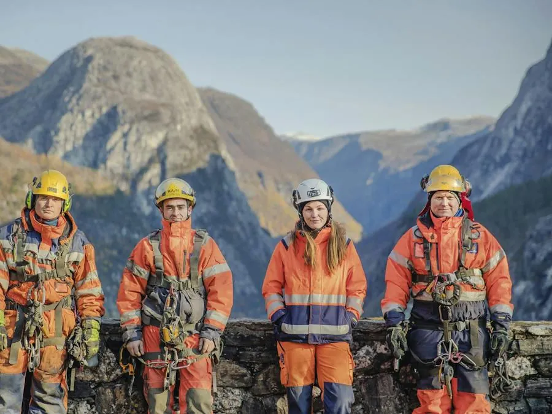

Forside / Prosjekter
Prosjekter og drift
Fra daglig vinterdrift til større anleggsprosjekter. Her er et innblikk i hva oppdragene består i.

Vinterdrift
Brøyting og strøing på vegnett i flere fylker — med beredskap når været slår om.
DriftVedlikehold
Lapping, kantklipp og utbedring av veg og grøft gjennom året.
VedlikeholdAnlegg
Bygging og utbedring av veg, gang- og sykkelveg og tilhørende infrastruktur.
AnleggGrunnforhold
Undersøkelser av kvikkleire og forurenset grunn før bygging.
UndersøkelseProsjekttypene er hentet fra Mesta sin egen beskrivelse. Konkrete prosjektnamn er ikkje lagde inn i demoen.
Vil dere vite mer om et oppdrag?
Ta kontakt, så går vi gjennom det.